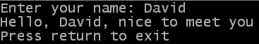
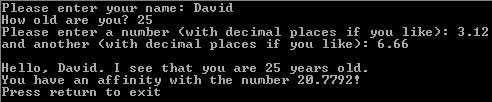

Da der Input Befehl auf das Drücken von Return wartet, werden Sie ihn normalerweise verwenden, wenn der Anwender Eingaben in Ihr Programm machen muss. Ein Beispiel dafür ist seine bisherige Verwendung im Benutzerhandbuch, um das Programm anzuhalten, bis der Anwender Return drückt (gab uns die Chance, den Text im Konsolenfenster zu sehen, bevor das Programm endet). Ein anderes Beispiel kann sein, wenn ein Benutzer einen Dateinamen, einen Benutzernamen oder ein Kennwort eingibt. Alles davon würde normalerweise eingegeben, bevor das Programm fortfährt.
Nachfolgend ein Beispiel zur Verwendung des Input Befehls. Sie finden den Quellcode hier. Unter dem Beispiel finden Sie eine beispielhafte Ausgabe und eine Erklärung des Quellcodes.
OpenConsole()
Print("Enter your name: ")
name$ = Input()
PrintN("")
PrintN("Hello, "+name$+", nice to meet you")
PrintN("Press return to exit")
Input()
CloseConsole()
End
 Sie werden bemerken, dass wir die Zeile Print("Enter your name: ") benutzen, bevor wir zum Input Befehl kommen. Dies erfolgt, um dem Anwender eine Aufforderung zu liefern; einige Anweisungen, die ihm sagen, was er eingeben soll, anstatt einfach einen blinkenden Cursor anzuzeigen. Sie sehen auch, dass wir Print verwendet haben, um diese Aufforderung auszugeben. Dadurch erscheinen die Benutzereingaben auf derselben Zeile wie die Eingabeaufforderung, obwohl das einfach Geschmackssache ist, wie Sie die Aufforderung angezeigt erhalten möchten.
Jedoch sind die wichtigen Teile des oben genannten Beispiels die folgenden Zeilen:
name$ = Input()
PrintN("")
PrintN("Hello, "+name$+", nice to meet you")
Die erste Zeile liest mit Hilfe des Input Befehls den vom Benutzer eingegebenen Text. Der
vom Input Befehl zurückgegebene Wert (der String, den der Anwender eingegeben hat)
ist in der Variablen name$ gespeichert. Die nächste Zeile
PrintN("") sieht vielleicht etwas
seltsam aus, aber wenn der Anwender die Return-Taste gedrückt hat, wird dies nicht
in der Konsole angezeigt. Also müssen wir "manuell" auf eine neue Zeile springen,
nachdem der Benutzer seinen String eingegeben hat. Zuletzt wird der vom Anwender
eingegebene String angezeigt, um zu bestätigen, dass er erfolgreich eingelesen wurde.
Das erste Zeichen im zurückgegebenen String ist das ASCII-Zeichen, welches diesen Tastendruck darstellt. Zum Beispiel, wenn der Benutzer die 'F' Taste drückte, dann wird das erste Zeichen im String ein "F" sein. Das zweite Zeichen im String ist nützlich, wenn der Anwender Tasten drückt, die keinen Buchstaben oder Zahlen entsprechen (zum Beispiel die Pfeiltasten). Das zweite Zeichen im String erlaubt Ihnen, nach jenen Sondertasten zu suchen.
Typische Fälle, wo Sie den Befehl Inkey verwenden können, wären jene, wo der Benutzer eine Taste drücken kann, aber - wenn er es nicht tut - das Programm seine Verarbeitung fortsetzt. Ein Beispiel hierfür wäre, wenn Sie einen Wert berechnen (was eine längere Zeit benötigt) und dem Anwender die Möglichkeit geben wollen, dies durch Drücken einer Taste auf der Tastatur abzubrechen. Ein anderes Beispiel hierfür könnte sein, wenn Sie ein Auswahlmenü anzeigen und möchten, dass Ihr Programm umgehend auf alle gedrückten Tasten reagiert, anstelle auf ein Drücken der Return-Taste zu warten.
Es gibt im Moment kein Beispiel für den Befehl Inkey, weil wir bisher noch nicht genug von der PureBasic Sprache behandelt haben, was uns erlauben würde, die Zeichen im String zu verarbeiten und den Programmfluss rund um den Befehl Inkey zu kontrollieren. Beide dieser Themen werden in den nächsten zwei Kapiteln besprochen.
Der Befehl Val erwartet einen String (welcher einer Zahl enthält) als Parameter und gibt einen Long-Wert als Ergebnis (welches dem Wert der Zahl im String entspricht) zurück. Die im String enthaltene Zahl sollte ausschließlich eine ganze Zahl sein.
Der Befehl ValF ist ähnlich, wird aber verwendet, um Zahlen mit Bruchteilen umzuwandeln. Er erwartet auch einen String (der die umzuwandelnde Zahl enthält) als Parameter, gibt diesmal jedoch eine Fließkomma-Zahl (Float) zurück.
Dieses Beispiel zeigt die Arbeitsweise von Val und ValF. Sie finden den Quellcode hier und die Ausgabe des Beispiels weiter darunter.
OpenConsole()
Print("Please enter your name: ")
name$ = Input()
PrintN("")
Print("How old are you? ")
age.w = Val(Input())
PrintN("")
Print("Please enter a number (with decimal places if you like): ")
num1.f = ValF(Input())
PrintN("")
Print("and another (with decimal places if you like): ")
num2.f = ValF(Input())
PrintN("")
; Display the results to the user
PrintN("")
PrintN("Hello, "+name$+". I see that you are "+Str(age)+" years old.")
PrintN("You have an affinity with the number "+StrF(num1 * num2)+"!")
PrintN("Press return to exit")
Input()
CloseConsole()
End
 Wie Sie sehen können, ist der Großteil dieses Beispiels analog dem Input Beispiel. Die Hauptunterschiede liegen in den Zeilen, die entweder den Val oder den ValF Befehl verwenden. In diesen Fällen wird der vom Input Befehl zurückgegebene Wert (welcher dem vom Anwender eingegebenen String entspricht) direkt als Parameter vom Val oder ValF Befehl verwendet, um den numerischen Wert der Zahl im String zu erhalten. Natürlich müssen wir diese - bevor wir sie wieder ausgeben können - mit Hilfe der Befehle Str oder StrF zurück in einen String umwandeln.
| Vorheriges Thema | Kapitel-Inhalt | Nächstes Thema |
|---|---|---|
| Darstellen von Text | Benutzerhandbuch Inhalt | Aussehen der Anzeige |